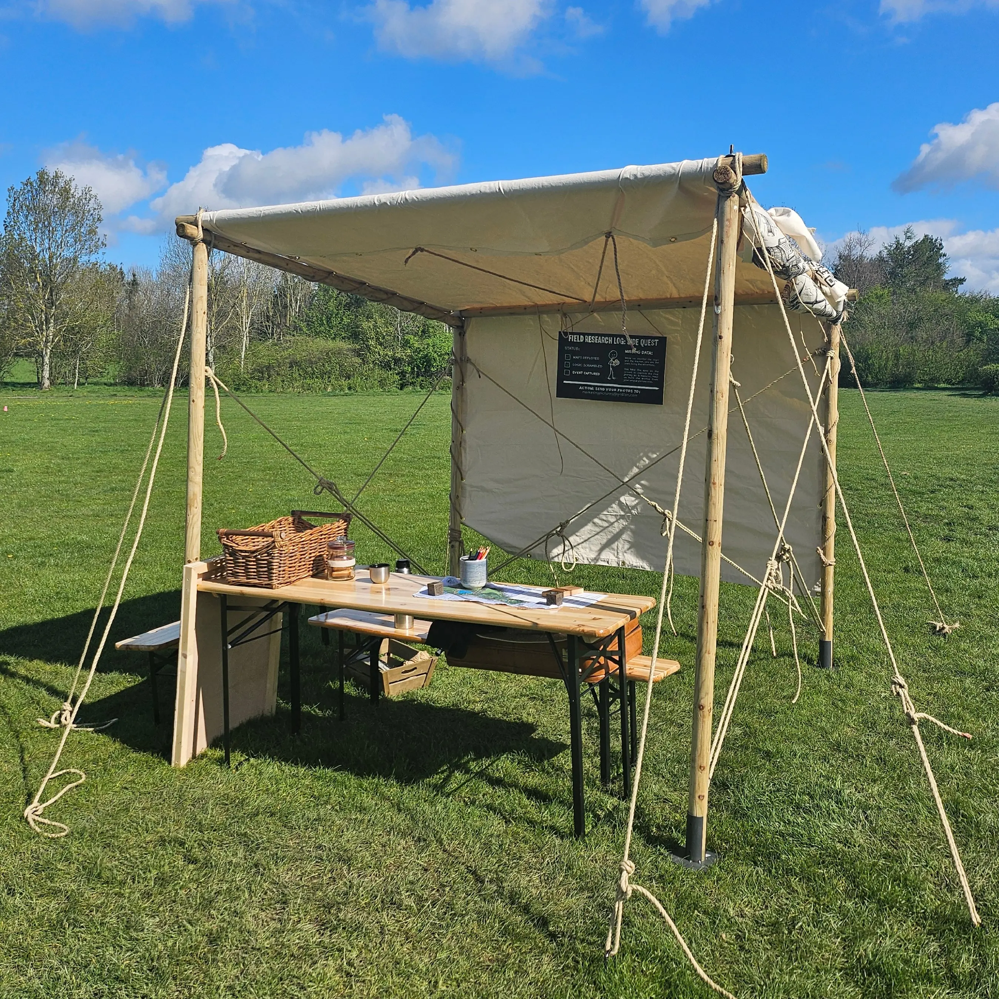
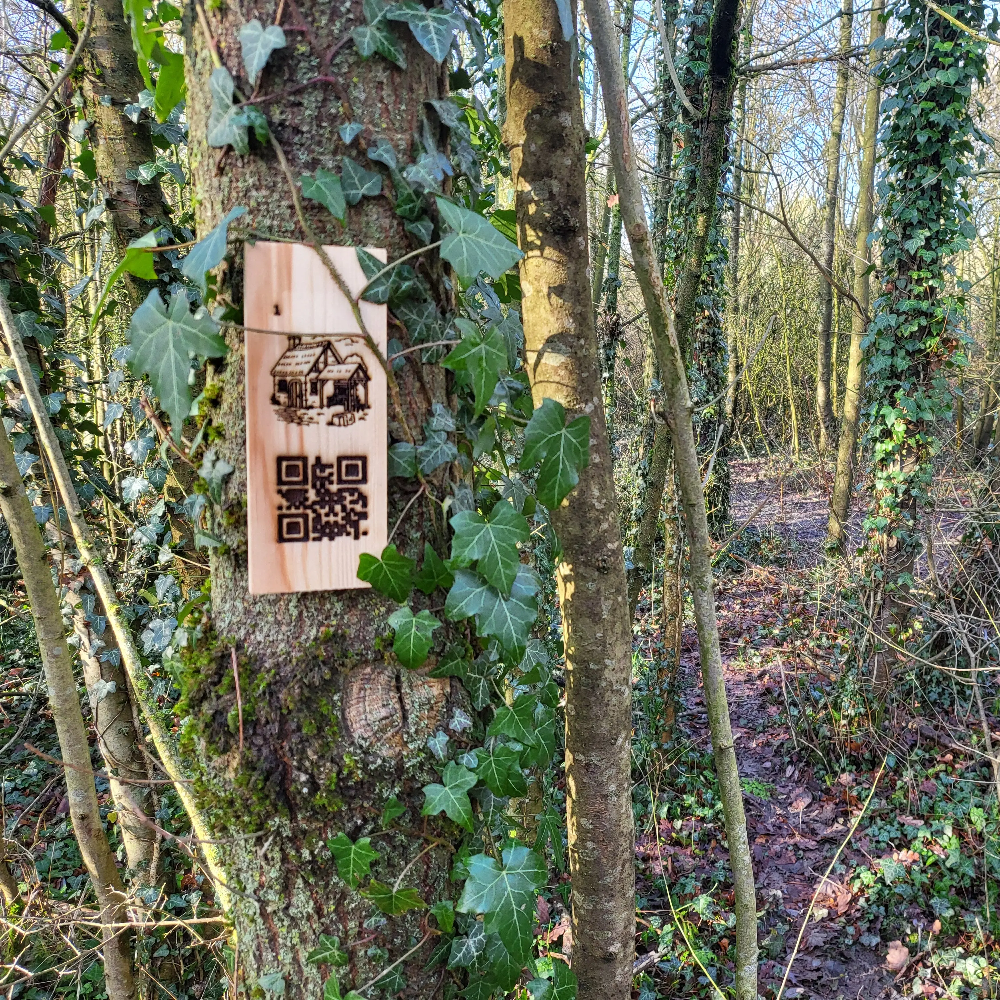
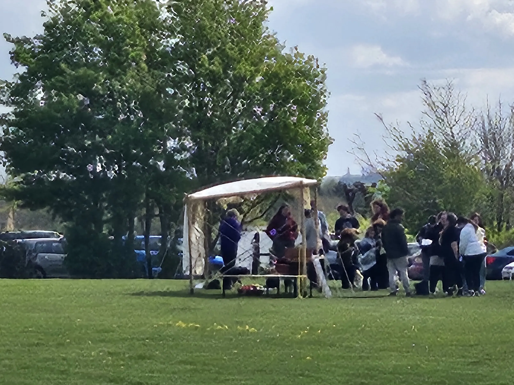

ORCHARD AUDIT
The Institute of Advanced Wandering is back for another mission. This time, the Institute needs you to uncover the truth behind Katy's locally world-famous Chesterfield Apple Tart recipe. Was it stolen? Sold? Lost? Or something altogether more ludicrous? Join us for an all-new, park-wide interactive game that will test your team's strategy and logic skills to the core.
Location: Holmebrook Valley Park, Chesterfield, S41 8XP
One fee reserves your whole team, not a per-operative charge; however many operatives you enlist.
1/5 // THE STATIONARY AUDIT Minimal geographic movement. The entire operation is conducted from a stationary chair, bench, or sheltered refreshment hub. Perfect for those who prefer their logistics entirely sedentary.
2/5 // THE LOCALIZED SORTIE A gentle baseline loop covering roughly 1.0km – 1.5km. Perfect for a casual stroll, though high-scoring units looking to maximize point efficiency might choose to extend this by an extra kilometer.
3/5 // THE STANDARD EXPEDITION A sensible baseline route of 2.0km – 4.0km. Ample points are available within this footprint, but competitive units chasing the top of the leaderboard can expect to log closer to 5.0km.
4/5 // THE BRISK AMBLE A substantial core layout spanning 5.0km – 8.0km. While a relaxed route is perfectly viable, maximizing your point capture before the countdown timer expires will likely push your total distance toward 10.0km.
5/5 // MAXIMUM SATURATION A highly expansive map footprint starting at a baseline of 8.0km. To fully clear the board and sweep every available high-value asset, expect an aggregate march exceeding 12.0km.
1/5 // MUNICIPAL CONCOURSE Uniform asphalt, smooth concrete, or level indoor flooring. Completely flat, entirely immune to weather conditions, and easily navigable in formal office footwear or heels.
2/5 // THE PREDICTABLE TRACK Compacted gravel pathways, smooth flagstones, or manicured lawns. Entirely predictable underfoot, requiring minimal structural navigation, though you may occasionally encounter a stray twig or a shallow puddle.
3/5 // UNCONSOLIDATED FOOTPATHS Standard British parkland and public rights-of-way. Expect some gentle inclines, slightly uneven grassy paths, exposed tree roots, and occasional muddy patches if it has rained recently. Sturdy shoes with decent grip are recommended.
4/5 // BACKCOUNTRY DEVIATIONS Steep, unmaintained woodland slopes, rough open fields, and thick bracken. No structural pathways or signposts to rely on. Navigating these zones requires constant ankle alertness and a high tolerance for damp socks.
5/5 // GEOGRAPHICAL DEFIANCE Exposed rock scrambles, steep pathless scree, and technical ascents. Strictly non-municipal terrain.
1/5 // REPETITIVE RECORDING A standard, predictable point-to-point path. Arrive at a fixed marker, scan a code to view static text, and walk to the next one. No complex strategy, hidden mechanics, or active decisions required.
2/5 // LOCALIZED DEDUCTION The route remains broadly linear, but tracking targets requires a small amount of thought. You may need to decipher occasional location riddles, spot subtle environmental clues, or choose between two obvious directions.
3/5 // CONFLICTING ARCHIVES A significant structural shift. The environment contains multiple distinct narrative paths that actively contradict one another. Teams must carefully evaluate differing accounts to figure out the true sequence of events.
4/5 // MATERIAL SYNTHESIS Advanced logistic management. Collect hidden digital items across the physical route and determine how to combine or craft them into higher-value field assets before your time windows expire.
5/5 // COOPERATIVE ARBITRAGE Maximum complexity. The map functions as a live market. Success requires teams to actively negotiate, barter, and execute secure inventory trades with rival groups on the field to piece together the final solution under time pressure.
All tickets are strictly managed per team and limited per event. We value your personal space more than your enlistment fee. Early booking is strongly advised to prevent logistics-induced disappointment.
THE OPERATIONAL CYCLE
// OFFICIAL PROTOCOLS FOR ADVANCED WANDERING
THE OPERATIONAL CYCLE
// OFFICIAL PROTOCOLS FOR ADVANCED WANDERING
01 REGISTRATION
(The "Where am I?" Phase)
PHYSICAL PRESENCE VERIFICATION Units locate and scan basecamp, think of it as a high-stakes check-in. Whether you're here to win or just here for the fresh air, the system needs to know you exist. If you don't scan it, the Institute didn't see it.

02 PROCUREMENT
(The "What happened?" Phase)
HISTORICAL GOSSIP RETRIEVAL Scour the sector to find and scan scattered checkpoints, engaging with digital residents to unearth 700 years of archived local secrets. In the Institute, you don't just find the truth; you choose which version of it we keep on record.
WARNING: Information is volatile and our filing system is strict. Choosing to follow one story path permanently locks out others. Choose wisely.
03 PROCESSING
(The "Can I build it?" Phase)
OPTIONAL ASSET ASSEMBLY Found some Peak Galena or Mutton Tallow? Excellent. For those on the Stewardship Track, you'll use the App to transform these resources into high-value Masterpieces. If you're on the Lore Track (the scenic route), feel free to skip the manual labor and just admire the view. We don't judge; we just record.

04 LIQUIDATION
(The "Gimme the points" Phase)
FINAL ACCOUNT RECONCILIATION As the Operational Window nears its end, things get frantic. Competitive units return to basecamp to barter and swap assets with rivals to maximize their scores. Wealth is temporary; the leaderboard is permanent.
BE ADVISED: When the window slams shut, the Market closes forever. Any assets left in your pocket are rendered mathematically worthless.
TYPICAL EVENT TIMELINE
// THE ARCHIVAL CLOCK: 210-MINUTE OPERATIONAL WINDOW
TYPICAL EVENT TIMELINE
// THE ARCHIVAL CLOCK: 210-MINUTE OPERATIONAL WINDOWPHASE I: THE THRESHOLD
Unit arrival for digital calibration (check-in) and receipt of the physical map and clue sheet.
PHASE II: THE JOURNEY
Decentralised exploration. Extract Resident Stories and gather raw materials like Fell Wool or Oak Timber.
PHASE III: THE MARKET
The Reveal. Live rankings are exposed. Units engage in face-to-face negotiation to finalise masterpiece commissions.
RECONCILIATION
Asset liquidation at the Institute Buyback solidifies the scoreboard. Operational window closes.
OPERATIONAL DEPLOYMENT
// PERSONNEL REQUIREMENTS & UNIT CONFIGURATION
OPERATIONAL DEPLOYMENT
// PERSONNEL REQUIREMENTS & UNIT CONFIGURATIONField Units operate at peak efficiency when roles are clearly defined. Use the configuration slider to determine your unit's Mental Load. Choose your personnel based on the following Institute-approved archetypes.
*(Strictly limited to 4 active roles for logic integrity. Additional social observers may wander alongside at no extra cost.)
THE GUILD UNIT
MENTAL LOAD: PROFESSIONALFour might be a crowd, but it's a highly specialised crowd. You have a person for everything, assuming you can all agree on which way to turn at the first Node.
📂 REGISTRY OF PREVIOUS EXERCISES // SYSTEM ARCHIVE ● PUBLIC SPECTATOR VIEWING PERMITTED
Want to see what an active field deployment actually looks like?
Before you reserve your clearance papers for the upcoming Sandbox cycle, you are authorised to review the interactive timeline recordings from our recent events.
These live tracking archives map exactly how real-world teams moved across the terrain. Toggle any unit on the roster below to see their pathing, watch their real-time trading logs, and see how they cracked the park's story puzzles before the countdown hit zero.
-
OPERATION GUINEA PIG
"The Institute officially recognises and encourages both Type 1 Fun (the pleasant enjoyment of a perfectly executed route) and Type 2 Fun (the frantic realisation you traded away your only Lead Pig seconds before the Buyback closes)."